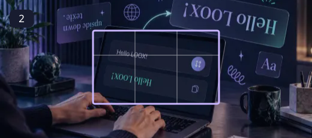
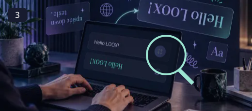
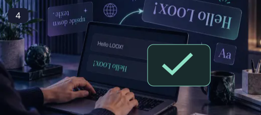

Upside Down Text
Give a short message a playful upside-down appearance using approximate Unicode counterparts.
A decorative alphabet is most useful when it supports a short message. Keep essential information in ordinary readable text, use the generated version for a small accent, and check it in the destination app. Unicode characters can affect searching, copying, screen-reader pronunciation and character limits. A creative label should still be understandable when the styling is unavailable.
How to use Upside Down Text ↓How to use Upside Down Text
Paste or open your source text
Enter source material you have permission to use. The editor accepts UTF-8 text and keeps processing in the browser.

Choose an alphabet or style
Type a short line and transform it. The character order is reversed and supported Latin characters are replaced by upside-down lookalikes.

Generate and review the result
Not every letter has an exact upside-down equivalent. Numbers, accents and punctuation may use approximations or stay unchanged.

Copy or download a separate text file
Use Copy or Download text. The output is a new file, and the original remains available for comparison.
A little personality, with readability in mind
Type a short line and transform it. The character order is reversed and supported Latin characters are replaced by upside-down lookalikes. Not every letter has an exact upside-down equivalent. Numbers, accents and punctuation may use approximations or stay unchanged.
- Give a short message a playful upside-down appearance using approximate Unicode counterparts.
- Use a dedicated workspace with visible settings and a plain-text output.
- Copy the result or download a separate UTF-8 text file.
- Process input locally without sending the text to an AI service.
Not every letter has an exact upside-down equivalent. Numbers, accents and punctuation may use approximations or stay unchanged.
Questions, answered
What does Upside Down Text do?
Give a short message a playful upside-down appearance using approximate Unicode counterparts.
How do I choose the right settings?
Type a short line and transform it. The character order is reversed and supported Latin characters are replaced by upside-down lookalikes.
What should I check before using the output?
Not every letter has an exact upside-down equivalent. Numbers, accents and punctuation may use approximations or stay unchanged.
Is this an AI-generated result?
No. This module applies explicit local transformations or browser-generated randomness. It does not send your text to an AI model.
Will this replace my original file?
The tools create a separate output. Keep the original until you have checked the exported file; the site does not provide cloud project backups.
Can I publish the result?
Use source media you own or have permission to edit. Check the destination’s requirements and the rights of anyone shown before publishing.